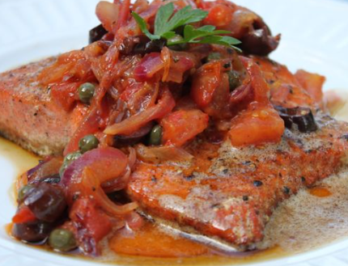

Butter Poached Salmon with Tomato Relish
Rich and heavy, but the relish really shines through.

Ingredients - Tomato Relish
- 1 small red onion, sliced
- 2 medium tomatoes, diced
- 3 TBS capers
- 2 TBS butter
- Fresh ground pepper to taste
Ingredients - Salmon
- 3 Filets, skin on
- 2 Tbsp butter per filet Note: I do not use this much butter and I add olive oil
- Sea salt and black pepper to taste
Instructions
- In a small saute pan melt the butter over medium heat, add the onions and cook until the onions begin to caramelize.
- Add the remaining ingredients and cook for another 2-3 minutes.
- Remove from heat and set aside.
- Melt the butter until it's hot enough so that when you put the filets in, skin side down, they sizzle.
- Let them cook for about 3 minutes then you're going to start basting the filets.
- Baste non-stop for about 4 minutes.
- Put Salmon in pre-heated oven for about 8-9 minutes, or until done to your liking.
Chef's Notes
Enter the notes you want here.